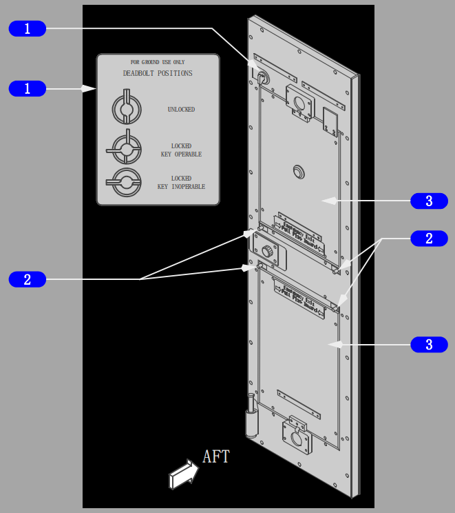
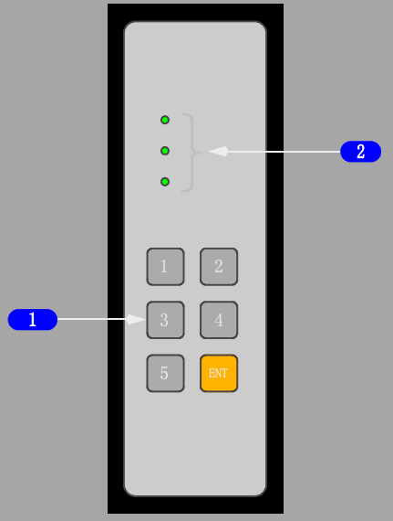
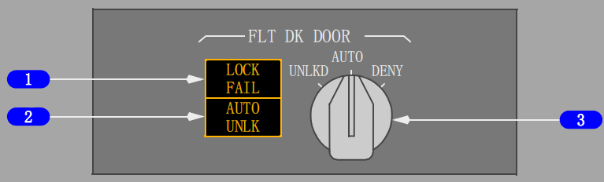
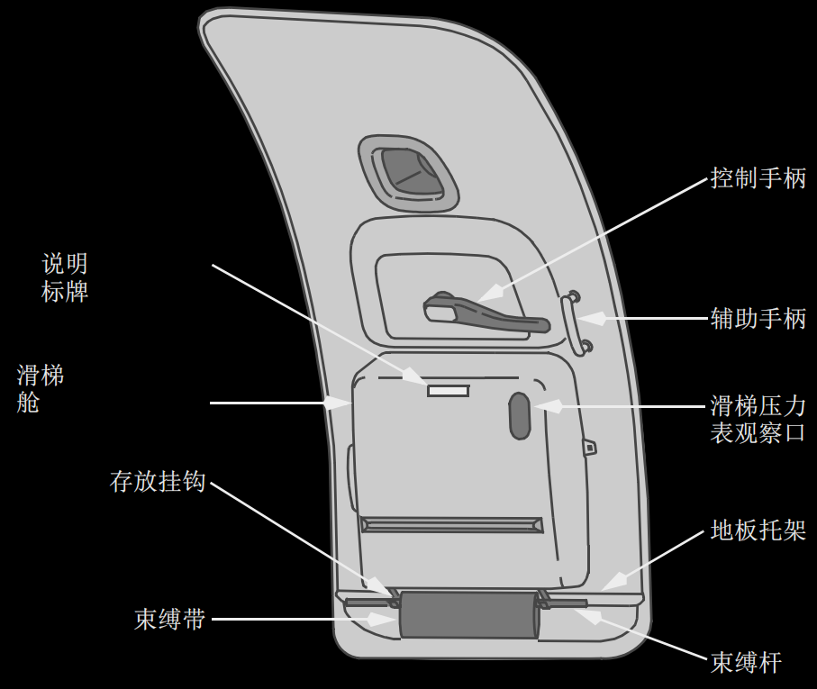
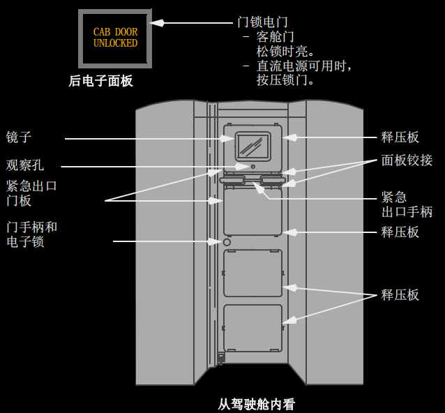
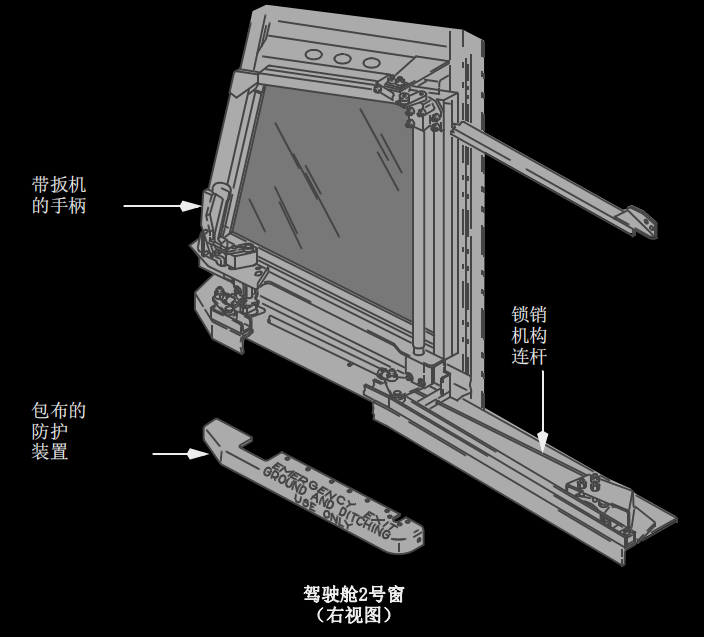

控制与指示:
返回面板

1 外部舱门信号
亮（琥珀色） – 对应的舱门未关闭并锁定。
2 翼上出口信号
亮(琥珀色) –
• 对应的翼上出口未关闭并锁定
• 指令锁定时相应的飞行锁不能接通。

1 锁死销和锁死销标牌
2 释放销
向内拔出释放销 – 门卡阻时人工将释压面板分离以使得面板打开并作为出口。
3 释压面板
提供应急逃生通道，并在飞机释压时自动打开。

1 键盘
按压 – 通过按压数字键输入 3 至 8 个数字紧急进入代码，然后按压输入键“ENT”。输入正确的紧急进入代码后驾驶舱谐音响。
2 进入灯
亮（红色） – 门锁住或进入驾驶舱系统电门在关位（OFF）。
亮（琥珀色） – 已输入正确的紧急进入代码。
亮（绿色） – 门开锁。

1 锁失效（LOCK FAIL）指示灯
亮（琥珀色） – 驾驶舱门锁选择器处于自动位（AUTO），但门锁已失效，或者驾驶舱进入系统电门关闭（OFF）。
2 自动松锁（AUTO UNLK）指示灯
亮（琥珀色） – 已在键盘上输入了正确的紧急进入代码。在计时器到时且门松锁前自动松锁灯（AUTO UNLK）闪烁，连续谐音响。
3 驾驶舱（FLT DK）门锁选择器
由弹簧保持在自动位（AUTO），必需将选择器按入才能由自动位（AUTO）旋转至松锁位，不必将选择器按入即可由自动位（AUTO）旋转至拒绝位（DENY）。
UNLKD（松锁） – 选择器处于松锁位（UNLKD），门松锁。
AUTO（自动） – 门锁住。输入紧急进入代码并等待一段时间后门松锁。 除非机组采取行动。
DENY（拒绝） – 拒绝键盘输入请求并在一定时间内禁止输入紧急进入代码。

系统说明:
门和窗
飞机上有两个旅客登机门，一个驾驶舱门（驾驶舱/客舱入口）两个勤务门和两个货舱门。在飞机的腹部还有一个中央电气和电子（E/E）设备入口门和一个设备舱进入门。
驾驶舱的 2 号窗，一个在左，一个在右，机组人员可以打开。
CAUTION: 舱门处风速大于 40 海里/小时时，不要操作登机门或货舱门。阵风风速大于 60 海里/小时时，不要使舱门一直敞开。强风可对机体结构造成损害。
客舱门
带钥匙的电动锁可从内侧或外侧打开、关闭以及锁住客舱门。28 Volt直流电源可用时，按压操纵台上的门锁电门，客舱门可以电动开锁或锁住；当客舱门电动锁住时要钥匙才能从客舱开门进入。没有电源时门无法锁上。
在舱门内有四块释压板。在驾驶舱突然发生失压时，释压板与门的铰接脱离。这将使门上的开口露出，使驾驶舱与客舱的空气压力达到平衡。
还有一个应急出口装置，可使上部的两块释压板从门上松开并拆除。操作时，按着释放手柄下面的面板拉释放手柄。除非手柄两端都从锁定位拉起，否则面板不会松开。

驾驶舱门
驾驶舱门防止子弹穿透和无关人员进入。门朝客舱方向打开。电源接通时门关上即锁住，无电源时门关上但未锁。门上装有一个观察镜，可观察客舱。转动门把手，可从驾驶舱人工开门。
门与一个门闩相连，在客舱一侧有一个钥匙锁。将两个同心门闩手柄旋至锁定（水 平）位置就可防止门从客舱用钥匙打开。仅旋转前面的门闩手柄锁则可用钥匙将门打开。
驾驶舱进入系统包括一个紧急进入面板，谐音组件，三位门锁选择器，两个指示灯，和一个进入系统开关。紧急进入面板包括一个含有六个按键的键盘，用于输入数字紧急进入代码，并有红、琥珀、绿三个指示灯。红灯亮表明门锁住。输入正确的紧急进入代码后，琥珀色的灯亮，绿灯亮表明门处于松锁状态。
在中央操纵台上安装了两个指示器灯和一个三位门锁选择器。琥珀色的锁失效 （LOCK FAIL）灯亮表明门锁失效或进入系统开关处于关闭（OFF）位。
紧急进入代码用于在飞行员失能情况下进入驾驶舱。出现驾驶舱谐音及琥珀色的自动松锁（AUTO UNLK）灯亮表明已输入正确的紧急进入代码，且门会在一定时间内按程序松锁。在门锁选择器上选择拒绝（DENY）位置即拒绝人员进入，并在几分钟内拒绝代码的输入。要允许进入，选择器应转至松锁（UNLKD）位置，使门松锁，并保持在那个位置。如果已输入紧急进入代码，且飞行员未采取任何行动，门将在一定时间内松锁。在门松锁以前，谐音持续响，且自动松锁灯闪烁。
在紧急进入面板上按压“1”及“输入”（ENT）键，驾驶舱谐音响（如设此程序）。
门与两个压力传感器相连，可在失压时为减压面板松锁。减压面板上有人工释放销。将销拉出，面板即松开，门卡阻时可出入驾驶舱。

驾驶舱2号窗
驾驶舱2号窗可在地面或飞行中打开，并且可用来紧急撤离。要开窗，按压扳机，向后向内侧转动手柄，窗子向内打开之后，向后移动直至在打开位置锁定。
要关窗，必须先将它松锁，把插销机械连杆向前拉以松开窗锁，按压扳机将窗往前移动直至手柄能往前向外转。松开扳机窗子就锁住。
只有副驾驶二号窗可以从机外打开。
下部货舱
下部货舱是按 FAA C 级舱的要求设计和建造的。这意味着此货舱被设计成为完全防火的，以保证飞机及其乘客的安全。货舱密闭并增压，但没有新鲜空气循环，温度控制与上面客舱是一样的。
在机身下部右侧处有两个货舱门。两个门都是插销式的，向内开启压力门，铰链在其上部的边缘，从飞机的里面或外面任一处人工操作。这两个门除了外形上稍有不同外，他们在设计和操作方面都类似。门由两个插销锁住，每一个门有一个平衡机构，它使打开门的力稍大于门的重量。因此，用一个较小的力就可将门翻转打开。关门时，只需拉一下连接在门上的牵索，抓住手柄，就可将门轻易关上。
压力均衡活门在每个舱的后隔框里。这个活门只让足够的空气流进或流出货舱以保 持几乎与客舱相同的压力。
如果飞机释压，下部货舱中的排气面板会提供一个大于压力均衡活门的卸压速率。